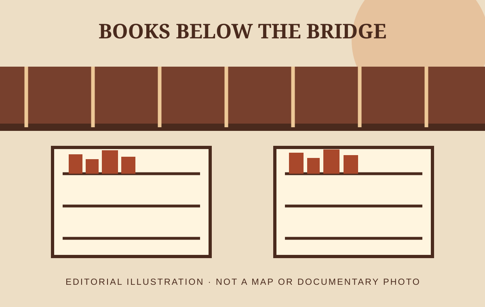

Fernandes Bridge Book Market: How to Explore Ahmedabad’s Reading Landmark

Why the market sits below the road
Ahmedabad Municipal Corporation’s heritage portal explains that Fernandes Bridge was constructed in 1884 over an old dried-up water feature connected to the historic Manek Nadi. Tankshal Road and today’s book market sit several metres below Gandhi Road, so the level change is part of the story rather than an accident of modern shopping. The bridge is therefore both infrastructure and an orientation point for a market known for educational books, stationery, used titles and other publications. Observe the stairs, road levels and visible bridge foundations before focusing only on shop displays.
Arrive with a useful search brief
A book market can feel overwhelming when every shelf becomes a possibility. Write the exact title, author, publisher, language and acceptable edition before you go. For textbooks, add the syllabus, course, year or ISBN because similar covers can hide important revisions. For novels and general reading, decide whether you want a reading copy or a collectible edition. A clear brief helps a seller search faster and reduces the chance of buying the wrong version merely because the price appears attractive.
Check condition page by page
For a used book, inspect the title and copyright pages, table of contents, binding, first and last sections, and any plates, maps or answer supplements. Look for missing pages, water rippling, mould smell, insect damage, heavy annotation and a spine that separates when opened. A name or note from a previous owner may not affect a reading copy, but it matters for a gift or collection. Ask the seller how returns or exchanges are handled before paying; do not assume one market-wide policy.
Treat rarity claims carefully
The municipal page notes that collectors may find first editions or rare books, but possibility is not proof. Confirm edition statements, publication dates, publisher details and completeness against a library catalogue or specialist bibliography. A worn old cover does not automatically make a book rare, and a reprint can still be valuable as a reading copy. If the price is significant, take time to verify provenance and condition. This guide does not authenticate or value any individual book, and a reel should never declare a discovery rare without evidence.
Respect sellers and narrow passages
Ask before filming a stall, a seller’s face or a customer handling books. Keep stairs and shop fronts clear, avoid placing books on the ground for a staged shot and return each item to the seller rather than an arbitrary stack. If you are comparing prices, do so without humiliating a shop or recording a private negotiation. Supporting a local book market includes paying fairly for the books you choose, crediting a consenting seller and representing the actual condition of a purchase.
Connect books with the old city
The heritage directory places Tankshal ni Haveli, Manek Chowk, Badshah no Haziro and Rani no Haziro nearby. A short walk can therefore combine reading culture, bridge history and architecture, but choose a realistic route and check current access. For content, open with the level change below Gandhi Road, show a verified book-search process and close with one nearby heritage transition. Label the illustration on this page honestly: it conveys the market idea but is not evidence of a specific stall, inventory or present-day scene.